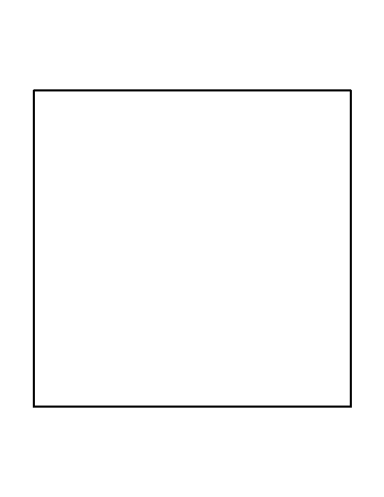
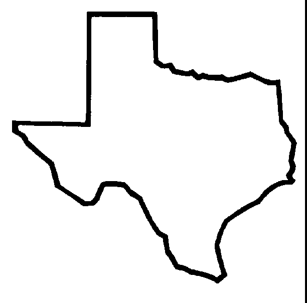
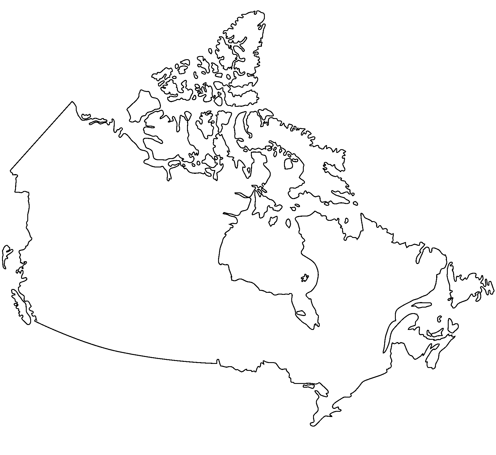
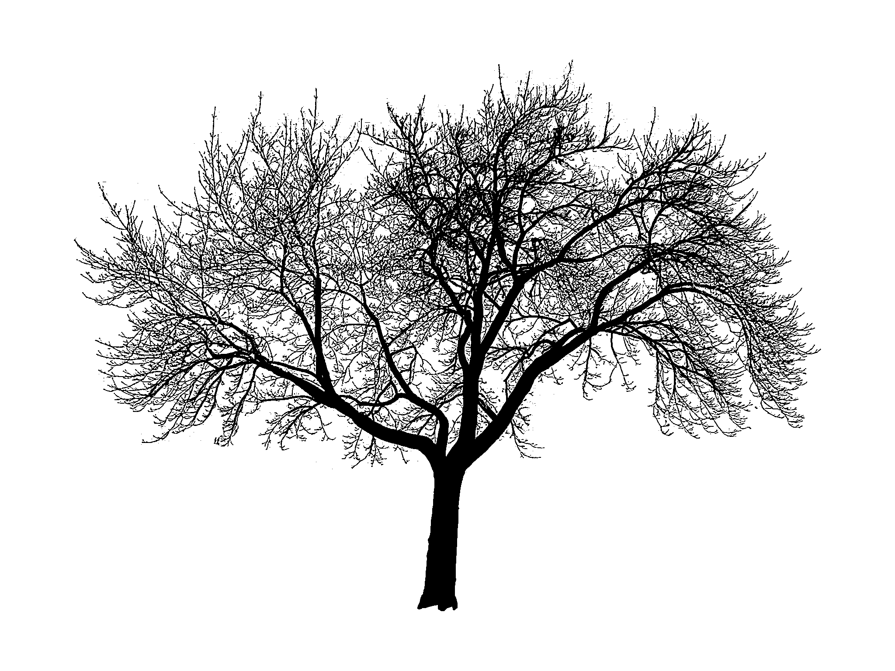

trvrm.github.io
Tue 24 January 2017
Inspired by the keynote given at PyCon Portland by K Lars Lohn,, I wanted to try my hand at computing the fractal dimension of a few different images.
This is a very simple implementation of a box counting algorithm.
A couple of ideas are borrowed from https://github.com/twobraids/fracdim.
First some imports:
import pandas
import math
from IPython.display import display
from PIL import Image
import os
from scipy.stats import linregress
Then a function to create simple black and white images.
def bw(img):
gray = img.convert('L')
return gray.point(lambda x: 0 if x<128 else 1, '1')
Some sample images. Basically, I expect the fractal dimension of the Canadian coastline to be higher than that of, say, a square.
texas=bw(Image.open('./images/texas.gif'))
tree=bw(Image.open('./images/tree.jpg'))
canada=bw(Image.open('./images/Canada.png'))
square=bw(Image.open('./images/square.jpg'))
At various different scales, I want to divide each image up into squares and then count how many squares have at least one black pixel in them.
def interesting(image):
#true if any data is 0, i.e. black
return 0 in set(image.getdata())
This function chops an image up into
def interesting_box_count(image, length):
width,height=image.size
interesting_count=0
box_count=0
for x in range(int(width/length)):
for y in range(int(height/length)):
C=(x*length,y*length,length*(x+1),length*(y+1))
chopped = image.crop(C)
box_count+=1
if (interesting(chopped)):
interesting_count+=1
assert box_count
assert interesting_count
return interesting_count
This returns pairs of numbers. One represents the scale, the other the (log) count of boxes at that scale that have black pixels in them.
def getcounts(image):
length=min(image.size)
while(length>5):
interesting = interesting_box_count(image,length)
yield math.log(1.0/length), math.log(interesting)
length=int(length/2)
def counts(image):
return pandas.DataFrame(getcounts(image),columns=["x","y"])
def dimension(image):
frame=counts(image)
return linregress(frame.x,frame.y)
And finally, armed with lists of pairs, we compute the slope we'd get if we plotted them against each other.
def analyse(image):
c=counts(image)
print("Fractal Dimension:",linregress(c.x,c.y).slope)
square

analyse(square)
Fractal Dimension: 1.26420823227
texas

analyse(texas)
Fractal Dimension: 1.45764518178
canada

analyse(canada)
Fractal Dimension: 1.52450994232
tree

analyse(tree)
Fractal Dimension: 1.82487974473
Which is exactly what we expected.
As K Lars Lohn said in his keynote, it's very rewarding when you try something out in Python and the result actually matches neatly up with the theory!